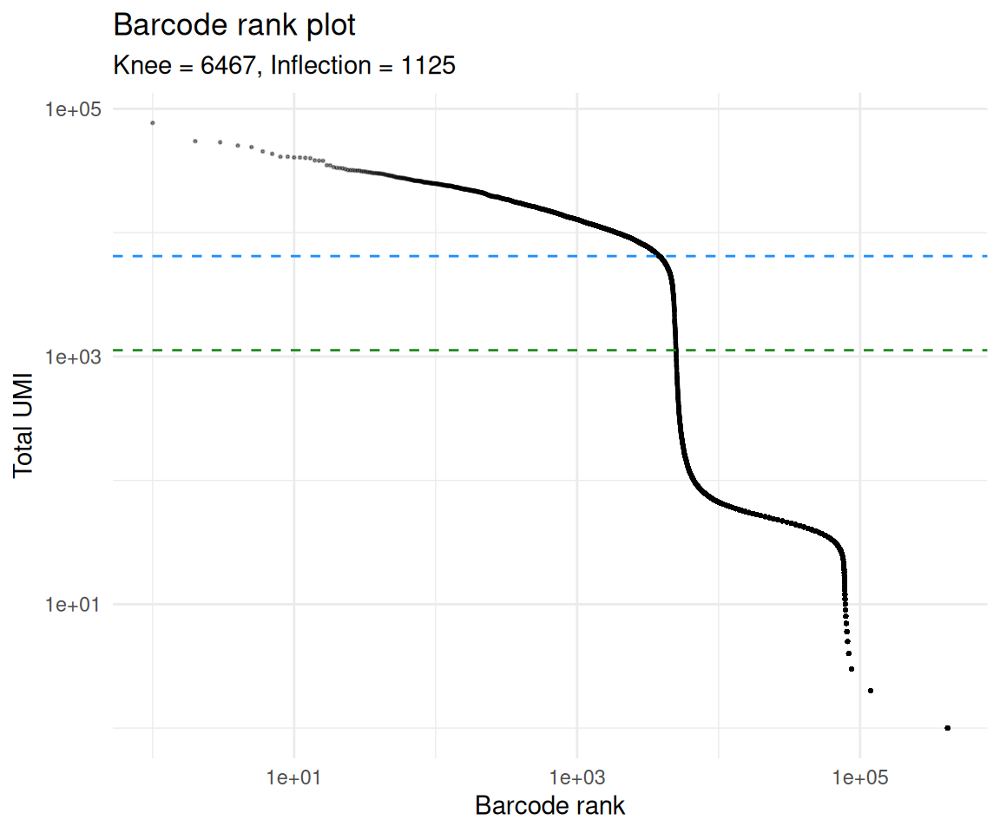
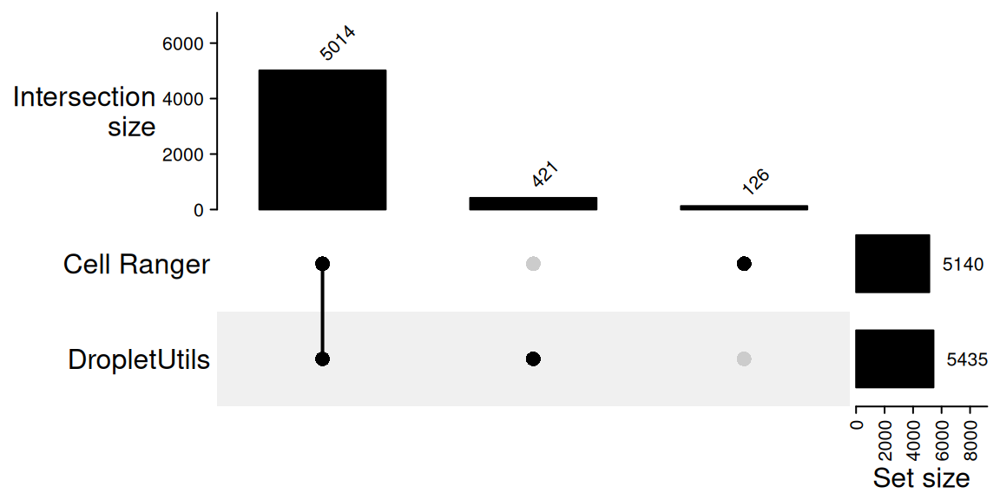
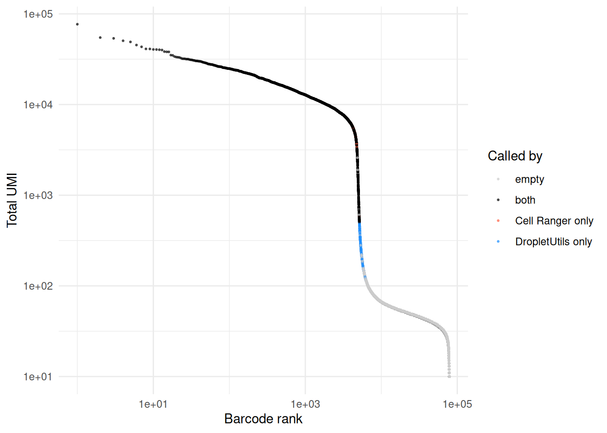
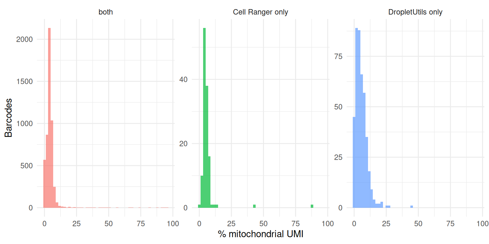

Last updated: 2026-04-28
Checks: 7 0
Knit directory: muse/
This reproducible R Markdown analysis was created with workflowr (version 1.7.2). The Checks tab describes the reproducibility checks that were applied when the results were created. The Past versions tab lists the development history.
Great! Since the R Markdown file has been committed to the Git repository, you know the exact version of the code that produced these results.
Great job! The global environment was empty. Objects defined in the global environment can affect the analysis in your R Markdown file in unknown ways. For reproduciblity it’s best to always run the code in an empty environment.
The command set.seed(20200712) was run prior to running
the code in the R Markdown file. Setting a seed ensures that any results
that rely on randomness, e.g. subsampling or permutations, are
reproducible.
Great job! Recording the operating system, R version, and package versions is critical for reproducibility.
Nice! There were no cached chunks for this analysis, so you can be confident that you successfully produced the results during this run.
Great job! Using relative paths to the files within your workflowr project makes it easier to run your code on other machines.
Great! You are using Git for version control. Tracking code development and connecting the code version to the results is critical for reproducibility.
The results in this page were generated with repository version 71e4ee4. See the Past versions tab to see a history of the changes made to the R Markdown and HTML files.
Note that you need to be careful to ensure that all relevant files for
the analysis have been committed to Git prior to generating the results
(you can use wflow_publish or
wflow_git_commit). workflowr only checks the R Markdown
file, but you know if there are other scripts or data files that it
depends on. Below is the status of the Git repository when the results
were generated:
Ignored files:
Ignored: .Rproj.user/
Ignored: data/1M_neurons_filtered_gene_bc_matrices_h5.h5
Ignored: data/293t/
Ignored: data/293t_3t3_filtered_gene_bc_matrices.tar.gz
Ignored: data/293t_filtered_gene_bc_matrices.tar.gz
Ignored: data/5k_Human_Donor1_PBMC_3p_gem-x_5k_Human_Donor1_PBMC_3p_gem-x_count_sample_filtered_feature_bc_matrix.h5
Ignored: data/5k_Human_Donor2_PBMC_3p_gem-x_5k_Human_Donor2_PBMC_3p_gem-x_count_sample_filtered_feature_bc_matrix.h5
Ignored: data/5k_Human_Donor3_PBMC_3p_gem-x_5k_Human_Donor3_PBMC_3p_gem-x_count_sample_filtered_feature_bc_matrix.h5
Ignored: data/5k_Human_Donor4_PBMC_3p_gem-x_5k_Human_Donor4_PBMC_3p_gem-x_count_sample_filtered_feature_bc_matrix.h5
Ignored: data/97516b79-8d08-46a6-b329-5d0a25b0be98.h5ad
Ignored: data/Parent_SC3v3_Human_Glioblastoma_filtered_feature_bc_matrix.tar.gz
Ignored: data/brain_counts/
Ignored: data/cl.obo
Ignored: data/cl.owl
Ignored: data/jurkat/
Ignored: data/jurkat:293t_50:50_filtered_gene_bc_matrices.tar.gz
Ignored: data/jurkat_293t/
Ignored: data/jurkat_filtered_gene_bc_matrices.tar.gz
Ignored: data/pbmc20k/
Ignored: data/pbmc20k_seurat/
Ignored: data/pbmc3k.csv
Ignored: data/pbmc3k.csv.gz
Ignored: data/pbmc3k.h5ad
Ignored: data/pbmc3k/
Ignored: data/pbmc3k_bpcells_mat/
Ignored: data/pbmc3k_export.mtx
Ignored: data/pbmc3k_matrix.mtx
Ignored: data/pbmc3k_seurat.rds
Ignored: data/pbmc4k_filtered_gene_bc_matrices.tar.gz
Ignored: data/pbmc_1k_v3_filtered_feature_bc_matrix.h5
Ignored: data/pbmc_1k_v3_raw_feature_bc_matrix.h5
Ignored: data/refdata-gex-GRCh38-2020-A.tar.gz
Ignored: data/seurat_1m_neuron.rds
Ignored: data/t_3k_filtered_gene_bc_matrices.tar.gz
Ignored: r_packages_4.5.2/
Untracked files:
Untracked: .claude/
Untracked: CLAUDE.md
Untracked: analysis/.claude/
Untracked: analysis/aucc.Rmd
Untracked: analysis/bimodal.Rmd
Untracked: analysis/bioc.Rmd
Untracked: analysis/bioc_scrnaseq.Rmd
Untracked: analysis/chick_weight.Rmd
Untracked: analysis/likelihood.Rmd
Untracked: analysis/modelling.Rmd
Untracked: analysis/sampleqc.Rmd
Untracked: analysis/wordpress_readability.Rmd
Untracked: bpcells_matrix/
Untracked: data/Caenorhabditis_elegans.WBcel235.113.gtf.gz
Untracked: data/GCF_043380555.1-RS_2024_12_gene_ontology.gaf.gz
Untracked: data/SC3pv3_GEX_Human_PBMC_filtered_feature_bc_matrix.h5
Untracked: data/SC3pv3_GEX_Human_PBMC_raw_feature_bc_matrix.h5
Untracked: data/SeuratObj.rds
Untracked: data/arab.rds
Untracked: data/astronomicalunit.csv
Untracked: data/davetang039sblog.WordPress.2026-02-12.xml
Untracked: data/femaleMiceWeights.csv
Untracked: data/lung_bcell.rds
Untracked: m3/
Untracked: output/decontx_corrected.rds
Untracked: output/dropletutils_cells.rds
Untracked: output/soupx_corrected.rds
Untracked: women.json
Unstaged changes:
Modified: analysis/isoform_switch_analyzer.Rmd
Note that any generated files, e.g. HTML, png, CSS, etc., are not included in this status report because it is ok for generated content to have uncommitted changes.
These are the previous versions of the repository in which changes were
made to the R Markdown (analysis/droplet_utils.Rmd) and
HTML (docs/droplet_utils.html) files. If you’ve configured
a remote Git repository (see ?wflow_git_remote), click on
the hyperlinks in the table below to view the files as they were in that
past version.
| File | Version | Author | Date | Message |
|---|---|---|---|---|
| Rmd | 71e4ee4 | Dave Tang | 2026-04-28 | DropletUtils |
Cell Ranger’s filtered output is the standard input to ambient-RNA correction tools like SoupX and DecontX, but the cell call itself can be wrong: empty droplets can sneak into the filtered matrix, and real but low-UMI cells can be missed. When that happens, downstream contamination correction either over-corrects legitimate biology (because real cells have polluted the ambient profile) or under-corrects soup (because empty droplets are masquerading as cells).
DropletUtils
(Lun A. et al., EmptyDrops: distinguishing cells from empty
droplets in droplet-based single-cell RNA sequencing data. Genome Biology 20:63,
2019) provides an alternative cell-calling procedure that you can
run yourself directly from the raw 10x output. The core function
emptyDrops() tests, for every barcode above a low UMI
cutoff, whether its expression profile is statistically distinguishable
from the ambient distribution estimated from the very-low-UMI barcodes.
Barcodes whose profile differs significantly are called as cells
regardless of where they fall on the barcode rank plot — so DropletUtils
can recover real but low-UMI cell types (e.g. small cells with little
mRNA) that a knee-based cutoff would discard.
This notebook runs DropletUtils on the same
SC3pv3_GEX_Human_PBMC dataset used in the SoupX and DecontX
notebooks, times the call with tictoc, and
compares the resulting cell set to Cell Ranger’s filtered output.
Cell Ranger has changed cell-calling algorithms across major versions, and the version of Cell Ranger that produced your filtered matrix matters for how you interpret the comparison below.
Cell Ranger 2.x used a single UMI threshold derived from the barcode
rank plot: the 99th percentile of total UMI counts among the top
N expected cells, divided by 10. Every barcode above that
threshold was a cell, every barcode below was empty. The method works
when there is a clean knee — i.e. one dominant cell population with
similar transcript content — but it systematically discards smaller
cells in heterogeneous samples.
Cell Ranger 3.0 replaced the single-threshold approach with a
two-step procedure inspired by the EmptyDrops
paper, the same algorithm DropletUtils::emptyDrops()
implements:
The second step is what allows recovery of small or low-mRNA cell types that the 2.x rule would have discarded. As a side effect, mitochondrially-enriched dying cells started being called more often in 3.0 than in 2.x — these have low total UMI but a non-ambient profile, so they pass the statistical test (10x KB). This is the underlying reason the mitochondrial-percentage diagnostic later in this notebook is worth running.
DropletUtils also exposes
emptyDropsCellRanger(), which mimics the specific variant
of EmptyDrops that Cell Ranger applies internally; the plain
emptyDrops() used in this notebook is the original from the
EmptyDrops paper.
Cell Ranger 8.0 keeps the 3.0 two-step structure but tightens three knobs around the EmptyDrops step (Cell Ranger 8.0 release notes):
max(500, 1 + max UMI observed in the ambient range). Some
barcodes that previously passed the filter are now classified as
background, particularly in samples where the ambient pool extends to
relatively high UMI counts.SC3Pv3HT, SC5PHT), the ambient
background range shifted from 45,000–90,000 to 80,000–160,000 barcodes
to fix undercalling on cell loads above ~30,000. The new range only
applies when the chemistry is specified manually; autodetection does not
pick it up.expect-cells upper
bound. The auto-estimated upper bound on expected cells was
reduced from 262,000 to 45,000 for standard analyses (the change was
introduced in 7.1 and codified in 8.0). This is a guardrail against the
algorithm over-calling cells in unusual samples.The SC3pv3_GEX_Human_PBMC dataset used here was
distributed with Cell Ranger 7.0.1, so the filtered matrix predates the
8.0 tightenings — but the 3.0+ two-step structure is already in place.
We should therefore expect the DropletUtils call to overlap heavily with
Cell Ranger’s call rather than disagree wildly; the disagreements that
do exist will tend to sit near the inflection point where the two
procedures’ decision thresholds are marginal.
If you ever need to compare the cell sets across Cell Ranger versions
on the same sample, a re-run of cellranger count
is the cleanest way to do it; the algorithm differences described above
mean two versions can produce noticeably different cell counts even from
the same FASTQs.
suppressPackageStartupMessages({
library(DropletUtils)
library(Seurat)
library(Matrix)
library(tictoc)
library(ggplot2)
library(S4Vectors)
library(BiocParallel)
library(ComplexHeatmap)
})The only step in this notebook that benefits from parallelisation is
the Monte Carlo simulation inside emptyDrops(), which
accepts a BPPARAM argument from BiocParallel.
We configure a MulticoreParam with four workers; setting
RNGseed on the param is the recommended way to get
reproducible Monte Carlo results across workers, since each worker is
given a deterministic substream of the master seed. The other steps in
the notebook are either single-threaded by design
(barcodeRanks is a sort plus a smoothing-spline fit) or
sparse-matrix operations that don’t go through BLAS, so there is no
point setting BLAS threads here.
bpp <- MulticoreParam(workers = 4, RNGseed = 1984)Both matrices come from the same Cell Ranger run. The raw matrix contains every barcode that received at least one UMI; the filtered matrix is Cell Ranger’s call of which of those barcodes correspond to real cells.
raw <- Seurat::Read10X_h5("data/SC3pv3_GEX_Human_PBMC_raw_feature_bc_matrix.h5")
filtered <- Seurat::Read10X_h5("data/SC3pv3_GEX_Human_PBMC_filtered_feature_bc_matrix.h5")
dim(raw)[1] 36601 909706dim(filtered)[1] 36601 5140barcodeRanks() ranks barcodes by total UMI count and
identifies two characteristic points on the resulting curve: the
knee (the steep transition between the high-UMI region
clearly populated by cells and the long low-UMI tail) and the
inflection (a less stringent cutoff further down the
curve). Barcodes above the knee are almost certainly cells; barcodes far
below the inflection are almost certainly empty; barcodes between the
two are ambiguous and are exactly where emptyDrops() does
its work.
tic("barcodeRanks")
br <- barcodeRanks(raw)
toc()barcodeRanks: 0.108 sec elapsedmetadata(br)$knee[1] 6466.777metadata(br)$inflection[1] 1125.07br_df <- as.data.frame(br)
br_df <- br_df[br_df$total > 0, ]
ggplot(br_df, aes(rank, total)) +
geom_point(size = 0.3, alpha = 0.4) +
geom_hline(yintercept = metadata(br)$knee,
colour = "dodgerblue", linetype = "dashed") +
geom_hline(yintercept = metadata(br)$inflection,
colour = "forestgreen", linetype = "dashed") +
scale_x_log10() +
scale_y_log10() +
labs(
x = "Barcode rank", y = "Total UMI",
title = "Barcode rank plot",
subtitle = sprintf("Knee = %.0f, Inflection = %.0f",
metadata(br)$knee, metadata(br)$inflection)
) +
theme_minimal()
emptyDrops() tests every barcode whose total UMI count
is above lower (default 100) against the ambient
distribution estimated from barcodes at or below lower. The
test is Monte Carlo, so we pass the four-worker
MulticoreParam configured above (its RNGseed
covers reproducibility) and time the call with tictoc.
tic("emptyDrops")
e_out <- emptyDrops(raw, BPPARAM = bpp)
toc()emptyDrops: 10.37 sec elapsede_outDataFrame with 909706 rows and 5 columns
Total LogProb PValue Limited FDR
<integer> <numeric> <numeric> <logical> <numeric>
AAACCCAAGAAACCCG-1 43 NA NA NA NA
AAACCCAAGAAAGCGA-1 106 -406.807 0.963904 FALSE 0.996852
AAACCCAAGAAATTCG-1 1 NA NA NA NA
AAACCCAAGAACCGCA-1 0 NA NA NA NA
AAACCCAAGAAGATCT-1 0 NA NA NA NA
... ... ... ... ... ...
TTTGTTGTCTTTAGGA-1 1 NA NA NA NA
TTTGTTGTCTTTCAGT-1 1 NA NA NA NA
TTTGTTGTCTTTCGAT-1 1 NA NA NA NA
TTTGTTGTCTTTGATC-1 38 NA NA NA NA
TTTGTTGTCTTTGCAT-1 1 NA NA NA NAemptyDrops() returns a DataFrame with one
row per barcode in the raw matrix. Barcodes at or below
lower get NA for everything (they are assumed
empty by construction). Barcodes above lower get a
LogProb (the test log-probability), a PValue,
the number of Monte Carlo iterations, and an FDR
(Benjamini–Hochberg adjusted).
The standard call uses an FDR threshold of 0.001:
is_cell <- !is.na(e_out$FDR) & e_out$FDR <= 0.001
sum(is_cell)[1] 5435du_cells <- colnames(raw)[is_cell]
length(du_cells)[1] 5435A useful diagnostic is to check whether the number of significant
tests is hitting the Monte Carlo iteration limit. Barcodes that exhaust
their iterations without rejecting the null may be true cells whose
p-values are merely capped by the simulation budget; if many of these
exist you should re-run with a larger niters.
table(Limited = e_out$Limited, Significant = is_cell) Significant
Limited FALSE TRUE
FALSE 1221 153
TRUE 0 5282Cell Ranger 3.0+ also runs an EmptyDrops-style step internally, so the two cell sets should overlap heavily. The interesting questions are how many cells they disagree on and where on the barcode rank plot the disagreements live.
cr_cells <- colnames(filtered)
both <- intersect(cr_cells, du_cells)
only_cr <- setdiff(cr_cells, du_cells)
only_du <- setdiff(du_cells, cr_cells)
c(
cell_ranger = length(cr_cells),
droplet_utils = length(du_cells),
both = length(both),
only_cell_ranger = length(only_cr),
only_droplet_utils = length(only_du)
) cell_ranger droplet_utils both only_cell_ranger
5140 5435 5014 126
only_droplet_utils
421 An UpSet plot is the most compact way to display this comparison,
even though with only two sets it conveys the same information as a Venn
diagram. ComplexHeatmap::make_comb_mat() builds a
combination matrix from a named list of barcode vectors and
UpSet() draws it; the top annotation gives the size of each
combination (intersection) and the right annotation gives the total size
of each input set.
m <- make_comb_mat(list(
`Cell Ranger` = cr_cells,
`DropletUtils` = du_cells
))
UpSet(
m,
set_order = c("Cell Ranger", "DropletUtils"),
comb_order = order(-comb_size(m)),
top_annotation = upset_top_annotation(m, add_numbers = TRUE),
right_annotation = upset_right_annotation(m, add_numbers = TRUE)
)
A barcode rank plot coloured by which method called each barcode shows where the disagreements sit. Cells called by both methods sit in the high-UMI plateau above the knee; method-specific calls tend to cluster around the inflection point, where the test statistics are marginal.
totals <- Matrix::colSums(raw)
call_label <- rep("empty", ncol(raw))
names(call_label) <- colnames(raw)
call_label[both] <- "both"
call_label[only_cr] <- "Cell Ranger only"
call_label[only_du] <- "DropletUtils only"
plot_df <- data.frame(
total = totals,
rank = rank(-totals, ties.method = "first"),
call = factor(call_label,
levels = c("empty", "both",
"Cell Ranger only", "DropletUtils only"))
)
# Drop the bulk of the empty droplets to keep the plot legible.
plot_df <- plot_df[plot_df$total >= 10, ]
ggplot(plot_df, aes(rank, total, colour = call)) +
geom_point(size = 0.4, alpha = 0.6) +
scale_x_log10() +
scale_y_log10() +
scale_colour_manual(values = c(
"empty" = "grey80",
"both" = "black",
"Cell Ranger only" = "tomato",
"DropletUtils only" = "dodgerblue"
)) +
labs(x = "Barcode rank", y = "Total UMI", colour = "Called by") +
theme_minimal()
The UMI distributions of the disagreement set tell us what kind of barcode each method considers a cell that the other does not:
summary(totals[only_cr]) Min. 1st Qu. Median Mean 3rd Qu. Max.
501 4446 5271 5075 5899 6466 summary(totals[only_du]) Min. 1st Qu. Median Mean 3rd Qu. Max.
101.0 177.0 243.0 259.3 327.0 497.0 Cells called by DropletUtils but missed by Cell Ranger should look like real cells, not dying ones. The proportion of mitochondrial reads is a standard low-quality flag — a barcode with ~100% mitochondrial UMI is almost certainly a lysed or dying cell whose cytoplasmic mRNA leaked out, not a small healthy cell.
mito_genes <- grep("^MT-", rownames(raw), value = TRUE)
length(mito_genes)[1] 13pct_mito <- function(barcodes) {
if (length(barcodes) == 0) return(numeric(0))
100 * Matrix::colSums(raw[mito_genes, barcodes, drop = FALSE]) /
Matrix::colSums(raw[, barcodes, drop = FALSE])
}
mito_df <- rbind(
data.frame(set = "both", pct = pct_mito(both)),
data.frame(set = "Cell Ranger only", pct = pct_mito(only_cr)),
data.frame(set = "DropletUtils only", pct = pct_mito(only_du))
)
ggplot(mito_df, aes(pct, fill = set)) +
geom_histogram(bins = 50, alpha = 0.7, position = "identity") +
facet_wrap(~ set, scales = "free_y") +
labs(x = "% mitochondrial UMI", y = "Barcodes") +
theme_minimal() +
theme(legend.position = "none")
A healthy disagreement set has a mitochondrial distribution overlapping the “both” set; a disagreement set dominated by very high mitochondrial percentage suggests that method is recovering dying cells rather than genuine low-mRNA cell types.
Save the DropletUtils call so a downstream notebook can use it as an
alternative to Cell Ranger’s filtered matrix when constructing
SoupChannel or SingleCellExperiment
objects.
saveRDS(
list(
e_out = e_out,
cells = du_cells,
fdr = 0.001
),
"output/dropletutils_cells.rds"
)sessionInfo()R version 4.5.2 (2025-10-31)
Platform: x86_64-pc-linux-gnu
Running under: Ubuntu 24.04.4 LTS
Matrix products: default
BLAS: /usr/lib/x86_64-linux-gnu/openblas-pthread/libblas.so.3
LAPACK: /usr/lib/x86_64-linux-gnu/openblas-pthread/libopenblasp-r0.3.26.so; LAPACK version 3.12.0
locale:
[1] LC_CTYPE=en_US.UTF-8 LC_NUMERIC=C
[3] LC_TIME=en_US.UTF-8 LC_COLLATE=en_US.UTF-8
[5] LC_MONETARY=en_US.UTF-8 LC_MESSAGES=en_US.UTF-8
[7] LC_PAPER=en_US.UTF-8 LC_NAME=C
[9] LC_ADDRESS=C LC_TELEPHONE=C
[11] LC_MEASUREMENT=en_US.UTF-8 LC_IDENTIFICATION=C
time zone: Etc/UTC
tzcode source: system (glibc)
attached base packages:
[1] grid stats4 stats graphics grDevices utils datasets
[8] methods base
other attached packages:
[1] ComplexHeatmap_2.26.1 BiocParallel_1.44.0
[3] ggplot2_4.0.3 tictoc_1.2.1
[5] Matrix_1.7-4 Seurat_5.5.0
[7] SeuratObject_5.4.0 sp_2.2-1
[9] DropletUtils_1.30.0 SingleCellExperiment_1.32.0
[11] SummarizedExperiment_1.40.0 Biobase_2.70.0
[13] GenomicRanges_1.62.1 Seqinfo_1.0.0
[15] IRanges_2.44.0 S4Vectors_0.48.1
[17] BiocGenerics_0.56.0 generics_0.1.4
[19] MatrixGenerics_1.22.0 matrixStats_1.5.0
[21] workflowr_1.7.2
loaded via a namespace (and not attached):
[1] RcppAnnoy_0.0.23 splines_4.5.2
[3] later_1.4.8 tibble_3.3.1
[5] R.oo_1.27.1 polyclip_1.10-7
[7] fastDummies_1.7.6 lifecycle_1.0.5
[9] doParallel_1.0.17 edgeR_4.8.2
[11] rprojroot_2.1.1 hdf5r_1.3.12
[13] globals_0.19.1 processx_3.9.0
[15] lattice_0.22-7 MASS_7.3-65
[17] magrittr_2.0.5 limma_3.66.0
[19] plotly_4.12.0 sass_0.4.10
[21] rmarkdown_2.31 jquerylib_0.1.4
[23] yaml_2.3.12 httpuv_1.6.17
[25] otel_0.2.0 sctransform_0.4.3
[27] spam_2.11-3 spatstat.sparse_3.1-0
[29] reticulate_1.46.0 cowplot_1.2.0
[31] pbapply_1.7-4 RColorBrewer_1.1-3
[33] abind_1.4-8 Rtsne_0.17
[35] purrr_1.2.2 R.utils_2.13.0
[37] git2r_0.36.2 circlize_0.4.18
[39] ggrepel_0.9.8 irlba_2.3.7
[41] listenv_0.10.1 spatstat.utils_3.2-2
[43] goftest_1.2-3 RSpectra_0.16-2
[45] spatstat.random_3.4-5 dqrng_0.4.1
[47] fitdistrplus_1.2-6 parallelly_1.47.0
[49] DelayedMatrixStats_1.32.0 codetools_0.2-20
[51] DelayedArray_0.36.1 scuttle_1.20.0
[53] shape_1.4.6.1 tidyselect_1.2.1
[55] farver_2.1.2 spatstat.explore_3.8-0
[57] jsonlite_2.0.0 GetoptLong_1.1.1
[59] progressr_0.19.0 iterators_1.0.14
[61] ggridges_0.5.7 survival_3.8-3
[63] foreach_1.5.2 tools_4.5.2
[65] ica_1.0-3 Rcpp_1.1.1-1.1
[67] glue_1.8.1 gridExtra_2.3
[69] SparseArray_1.10.10 xfun_0.57
[71] dplyr_1.2.1 HDF5Array_1.38.0
[73] withr_3.0.2 fastmap_1.2.0
[75] rhdf5filters_1.22.0 callr_3.7.6
[77] digest_0.6.39 R6_2.6.1
[79] mime_0.13 colorspace_2.1-2
[81] Cairo_1.7-0 scattermore_1.2
[83] tensor_1.5.1 spatstat.data_3.1-9
[85] R.methodsS3_1.8.2 h5mread_1.2.1
[87] tidyr_1.3.2 data.table_1.18.2.1
[89] httr_1.4.8 htmlwidgets_1.6.4
[91] S4Arrays_1.10.1 whisker_0.4.1
[93] uwot_0.2.4 pkgconfig_2.0.3
[95] gtable_0.3.6 lmtest_0.9-40
[97] S7_0.2.2 XVector_0.50.0
[99] htmltools_0.5.9 dotCall64_1.2
[101] clue_0.3-68 scales_1.4.0
[103] png_0.1-9 spatstat.univar_3.1-7
[105] knitr_1.51 rstudioapi_0.18.0
[107] rjson_0.2.23 reshape2_1.4.5
[109] nlme_3.1-168 GlobalOptions_0.1.4
[111] cachem_1.1.0 zoo_1.8-15
[113] rhdf5_2.54.1 stringr_1.6.0
[115] KernSmooth_2.23-26 parallel_4.5.2
[117] miniUI_0.1.2 pillar_1.11.1
[119] vctrs_0.7.3 RANN_2.6.2
[121] promises_1.5.0 beachmat_2.26.0
[123] xtable_1.8-8 cluster_2.1.8.1
[125] evaluate_1.0.5 cli_3.6.6
[127] locfit_1.5-9.12 compiler_4.5.2
[129] crayon_1.5.3 rlang_1.2.0
[131] future.apply_1.20.2 labeling_0.4.3
[133] ps_1.9.3 getPass_0.2-4
[135] plyr_1.8.9 fs_2.1.0
[137] stringi_1.8.7 viridisLite_0.4.3
[139] deldir_2.0-4 lazyeval_0.2.3
[141] spatstat.geom_3.7-3 RcppHNSW_0.6.0
[143] patchwork_1.3.2 bit64_4.8.0
[145] sparseMatrixStats_1.22.0 future_1.70.0
[147] Rhdf5lib_1.32.0 statmod_1.5.1
[149] shiny_1.13.0 ROCR_1.0-12
[151] igraph_2.3.0 bslib_0.10.0
[153] bit_4.6.0
sessionInfo()R version 4.5.2 (2025-10-31)
Platform: x86_64-pc-linux-gnu
Running under: Ubuntu 24.04.4 LTS
Matrix products: default
BLAS: /usr/lib/x86_64-linux-gnu/openblas-pthread/libblas.so.3
LAPACK: /usr/lib/x86_64-linux-gnu/openblas-pthread/libopenblasp-r0.3.26.so; LAPACK version 3.12.0
locale:
[1] LC_CTYPE=en_US.UTF-8 LC_NUMERIC=C
[3] LC_TIME=en_US.UTF-8 LC_COLLATE=en_US.UTF-8
[5] LC_MONETARY=en_US.UTF-8 LC_MESSAGES=en_US.UTF-8
[7] LC_PAPER=en_US.UTF-8 LC_NAME=C
[9] LC_ADDRESS=C LC_TELEPHONE=C
[11] LC_MEASUREMENT=en_US.UTF-8 LC_IDENTIFICATION=C
time zone: Etc/UTC
tzcode source: system (glibc)
attached base packages:
[1] grid stats4 stats graphics grDevices utils datasets
[8] methods base
other attached packages:
[1] ComplexHeatmap_2.26.1 BiocParallel_1.44.0
[3] ggplot2_4.0.3 tictoc_1.2.1
[5] Matrix_1.7-4 Seurat_5.5.0
[7] SeuratObject_5.4.0 sp_2.2-1
[9] DropletUtils_1.30.0 SingleCellExperiment_1.32.0
[11] SummarizedExperiment_1.40.0 Biobase_2.70.0
[13] GenomicRanges_1.62.1 Seqinfo_1.0.0
[15] IRanges_2.44.0 S4Vectors_0.48.1
[17] BiocGenerics_0.56.0 generics_0.1.4
[19] MatrixGenerics_1.22.0 matrixStats_1.5.0
[21] workflowr_1.7.2
loaded via a namespace (and not attached):
[1] RcppAnnoy_0.0.23 splines_4.5.2
[3] later_1.4.8 tibble_3.3.1
[5] R.oo_1.27.1 polyclip_1.10-7
[7] fastDummies_1.7.6 lifecycle_1.0.5
[9] doParallel_1.0.17 edgeR_4.8.2
[11] rprojroot_2.1.1 hdf5r_1.3.12
[13] globals_0.19.1 processx_3.9.0
[15] lattice_0.22-7 MASS_7.3-65
[17] magrittr_2.0.5 limma_3.66.0
[19] plotly_4.12.0 sass_0.4.10
[21] rmarkdown_2.31 jquerylib_0.1.4
[23] yaml_2.3.12 httpuv_1.6.17
[25] otel_0.2.0 sctransform_0.4.3
[27] spam_2.11-3 spatstat.sparse_3.1-0
[29] reticulate_1.46.0 cowplot_1.2.0
[31] pbapply_1.7-4 RColorBrewer_1.1-3
[33] abind_1.4-8 Rtsne_0.17
[35] purrr_1.2.2 R.utils_2.13.0
[37] git2r_0.36.2 circlize_0.4.18
[39] ggrepel_0.9.8 irlba_2.3.7
[41] listenv_0.10.1 spatstat.utils_3.2-2
[43] goftest_1.2-3 RSpectra_0.16-2
[45] spatstat.random_3.4-5 dqrng_0.4.1
[47] fitdistrplus_1.2-6 parallelly_1.47.0
[49] DelayedMatrixStats_1.32.0 codetools_0.2-20
[51] DelayedArray_0.36.1 scuttle_1.20.0
[53] shape_1.4.6.1 tidyselect_1.2.1
[55] farver_2.1.2 spatstat.explore_3.8-0
[57] jsonlite_2.0.0 GetoptLong_1.1.1
[59] progressr_0.19.0 iterators_1.0.14
[61] ggridges_0.5.7 survival_3.8-3
[63] foreach_1.5.2 tools_4.5.2
[65] ica_1.0-3 Rcpp_1.1.1-1.1
[67] glue_1.8.1 gridExtra_2.3
[69] SparseArray_1.10.10 xfun_0.57
[71] dplyr_1.2.1 HDF5Array_1.38.0
[73] withr_3.0.2 fastmap_1.2.0
[75] rhdf5filters_1.22.0 callr_3.7.6
[77] digest_0.6.39 R6_2.6.1
[79] mime_0.13 colorspace_2.1-2
[81] Cairo_1.7-0 scattermore_1.2
[83] tensor_1.5.1 spatstat.data_3.1-9
[85] R.methodsS3_1.8.2 h5mread_1.2.1
[87] tidyr_1.3.2 data.table_1.18.2.1
[89] httr_1.4.8 htmlwidgets_1.6.4
[91] S4Arrays_1.10.1 whisker_0.4.1
[93] uwot_0.2.4 pkgconfig_2.0.3
[95] gtable_0.3.6 lmtest_0.9-40
[97] S7_0.2.2 XVector_0.50.0
[99] htmltools_0.5.9 dotCall64_1.2
[101] clue_0.3-68 scales_1.4.0
[103] png_0.1-9 spatstat.univar_3.1-7
[105] knitr_1.51 rstudioapi_0.18.0
[107] rjson_0.2.23 reshape2_1.4.5
[109] nlme_3.1-168 GlobalOptions_0.1.4
[111] cachem_1.1.0 zoo_1.8-15
[113] rhdf5_2.54.1 stringr_1.6.0
[115] KernSmooth_2.23-26 parallel_4.5.2
[117] miniUI_0.1.2 pillar_1.11.1
[119] vctrs_0.7.3 RANN_2.6.2
[121] promises_1.5.0 beachmat_2.26.0
[123] xtable_1.8-8 cluster_2.1.8.1
[125] evaluate_1.0.5 cli_3.6.6
[127] locfit_1.5-9.12 compiler_4.5.2
[129] crayon_1.5.3 rlang_1.2.0
[131] future.apply_1.20.2 labeling_0.4.3
[133] ps_1.9.3 getPass_0.2-4
[135] plyr_1.8.9 fs_2.1.0
[137] stringi_1.8.7 viridisLite_0.4.3
[139] deldir_2.0-4 lazyeval_0.2.3
[141] spatstat.geom_3.7-3 RcppHNSW_0.6.0
[143] patchwork_1.3.2 bit64_4.8.0
[145] sparseMatrixStats_1.22.0 future_1.70.0
[147] Rhdf5lib_1.32.0 statmod_1.5.1
[149] shiny_1.13.0 ROCR_1.0-12
[151] igraph_2.3.0 bslib_0.10.0
[153] bit_4.6.0